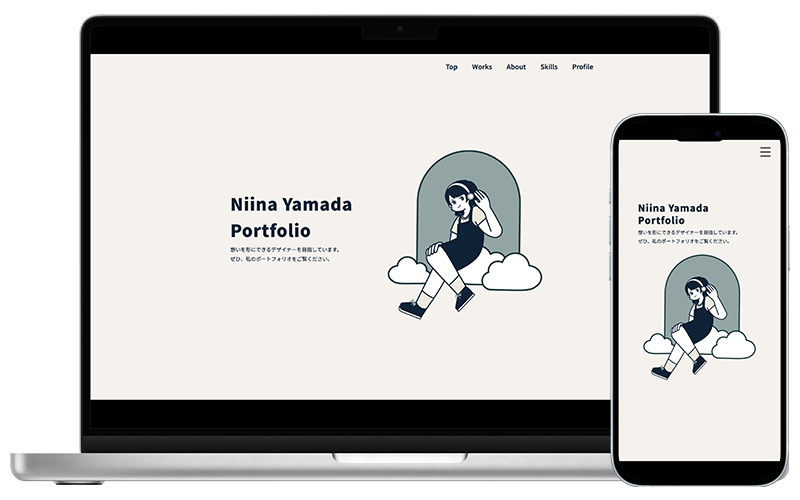
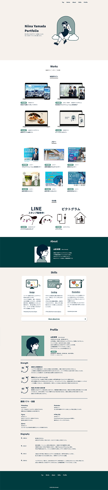
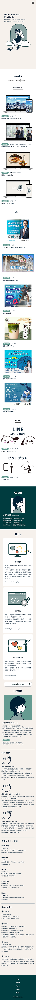

ポートフォリオサイト
- 自主制作
- #WEBサイト

| 概要 | 自身の経歴や制作物をまとめたポートフォリオサイトを制作しました。 |
|---|---|
| 目的 | 自分のスキルや実績を採用担当者に分かりやすく伝え、就職・転職活動において自分をアピールする。 |
| ターゲット | 採用担当者の方々 |
| 制作にあたって | シンプルで分かりやすいデザインを意識し、採用担当者が忙しい中でも、 一目見ただけで直感的に私のスキルを理解してもらえるよう意識して設計しました。 私の経歴や強み、スキルの習得レベルを掲載し、訪問者が私という人物をより詳細に理解できるような 構成にしています。 |
| デザイン | 自分らしさを表現するために、柔らかく親しみやすいカラーと丸みのあるデザインを取り入れました。 |
| 制作期間 | 企画・ワイヤーフレーム 2日間 デザイン 2週間 コーディング 2週間 |
| 使用したツール | Photoshop / Illustrator / Procreate / DreamWeaver / Visual Studio Code |

